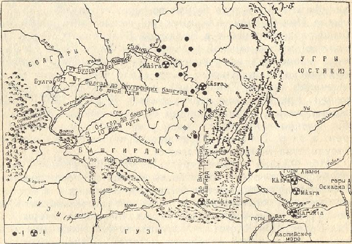
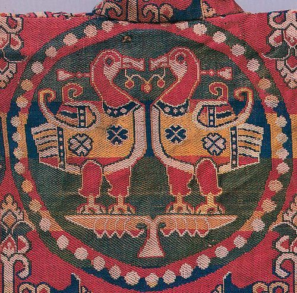

В исторической литературе IX – X вв. появляются первые упоминания о племенах Южного Урала. Башкиры впервые были упомянуты в сочинениях Саллама Тарджемана (IX век). Он написал отчёт о путешествии 842-847 года, целью которого было отыскание легендарной страны Гога и Магога. Экспедиция Саллама Тарджемана втретила башкир в 27 днях пути от города в устье реки Волги. Правда подлинник труда Саллама Тарджемана не сохранился, однако мы о нём знаем из рассказов его современников. К примеру, Ибн-Хордадбек заявлял, что автор передал свой отчёт ему лично, поэтому сомневаться в недоставерности сведеней Саллама Тарджемана не стоит.
В 922 г. В составе посольства Багдадского халифата в Волжскую Булгарию через страну башкир проезжал Ибн-Фадлан. Согласно его описанию, посольство долго ехало через страну огузо-кыпчаков (степи Приаралья), а затем, в районе нынешнего г.Уральска, оно переправилось через р. Яик и сразу же вступило в «страну башкир из числа тюрков». В ней арабы переправились через такие реки как Кинель, Ток, Соран, а за р. Большой Черемшан начинались уже пределы государства Волжская Булгария. Ибн-Фадлан в своем труде не уточняет границы страны башкир, но этот пробел восполняется его современником Истахри, который знает о башкирах , обитающих к востоку от булгар, в горно-лесных районах, следовательно, на Южном Урале. Архиологогические раскопки подтвердили, что арабы, в соответствии с описанием Ибн-Фадлана, посещали эти места.
Башкирский этнос. Башкирская этнографическая наука обязана труду С. И. Руденко: он в своём труде "Башкиры" осветил многие вопросы, касательно охвата многогранной жизни башкирского народа. Руденко повсюду подчёркивает сложный многосоставный характер быта, искусства, религиозных представлений, также сохранились яркие следы былых этно-культурных древних башкир с предками современных народов Средней азии, Сибири (казахи, киргизы, туркмены, алтайцы, ханты и другие) и Восточной Европы (татары, мишари, удмурты). Башкиры предсталяли единую группу племён-кочевников.
Культура и род занятий. Сложно представить, что у предков современных башкир было своё металлургическое производство и, естественно, свои базы добычи металла. Среди древних башкир были кузнецы высокого класса, способные создавать оружие и драгоценные украшения. Также культурно-экономичесткие отношения башкирских племен IX-XII вв. со своими соседями носили характер торгово-денежных. Например, архиологические раскопки говорят о том, что, благодаря торговли с соседями из Средней Азии, башкиры получили роскошные согдийские шелка.
Религия. Ибн-Фадлан в своих записях делал выводы о башкирской религии, их отдельная группа покланялась своему божеству - в целом он зафиксировал двенадцать культов башкир, в том числе: зимы, лета, дождя, ветра, деревьев, людей, лошади, воды, ночи, дня, смерти, земли.
Ибн-Фадлан о башкирах:«Одна группа покланялась журавлям. Мне сообщили, что они (башкиры) вели войну с людьми, из числа своих врагов. Враг оказался сильнее и обратил башкир в бегство. В этот момент журавли закричали за врагом, тот испугался и сам обратился в бегство. Поэтому башкиры стали покланяться журавлям и говорить:«Журавли - наш господь, так как он обратил в бегство врагов». За это они им и покланяются».
Такая религия называется язычеством, а оно в свою очередь тесно связано с шаманизмом. Такое верование и было у башкир в начале Х века, правда шаманизм становился всё менее выраженным.